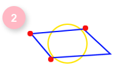
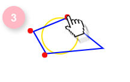
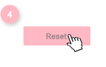

×
TUTORIAL
Hi! I'm Hernani Fernandes, a Full Stack developer and this program
is an example how to use canvas features and show an interactive html5.
-

Click 3 times on the white board in different places and create red circles
-

In the third click will be created a random blue parallelogram and a yellow circle with same area and position of the parallelogram
-

Drag and drop red circles to recalculate objects or click to set a new red circle position
-

Click in the right corner at the screen in the reset button to start again!